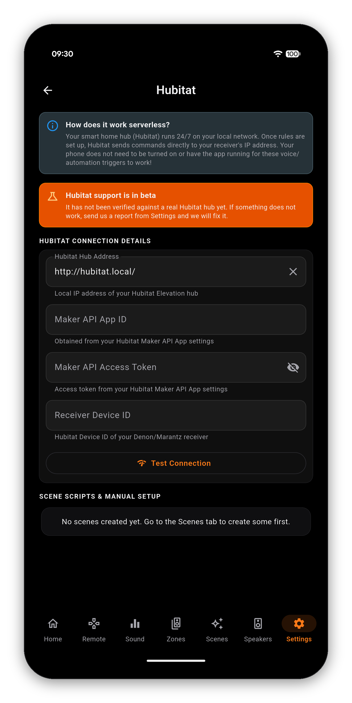
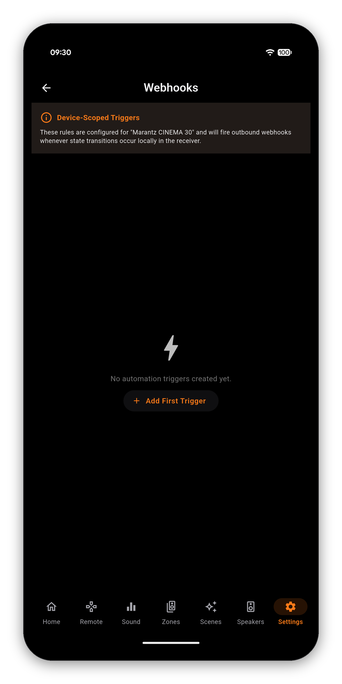
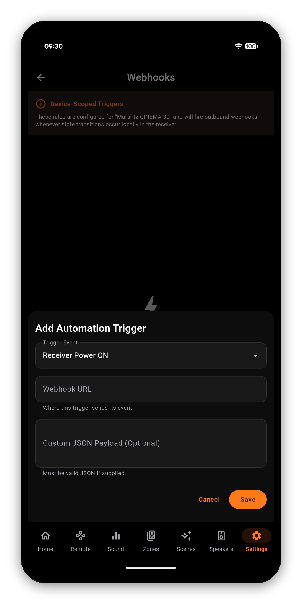

Link AVR Maestro to Home Assistant or Hubitat and every scene you have built becomes a native script on your hub. From then on the hub talks to the receiver directly, on your own network - so "Alexa, movie night" works with your phone off, asleep, or in another country.


Most integrations make your phone the middleman: the phone hears the command, the phone sends it, and the automation only works while the phone is awake and on the network.
AVR Maestro does not do that. It compiles your scenes into scripts that live on your hub, and the hub sends the commands to your receiver's local IP. The app's job ends when the sync finishes.
http://192.168.1.150:8123, or your external Nabu Casa URL.Scripts used to be named after the scene and the receiver, so renaming either one left the old script behind and quietly created a second. They are now named after the scene and the receiver's MAC address, which is what makes a rename update the same script instead of forking it.
The first sync after that change replaces the old scripts with the new ones. Anything you built on the old IDs needs repointing once - a dashboard button, an automation, a voice alias. Open the script in Home Assistant to find its new entity ID.
Hubitat is supported through its Maker API, and is marked BETA in the app because it is newer than the Home Assistant route, not because it is unfinished.
Enable Maker API on the hub first (Apps › Add Built-In App › Maker API) and it hands you all three. Paste them in and AVR Maestro discovers your receiver, publishes your scenes as command sequences, and pushes live state back so a Hubitat dashboard reflects what the receiver is actually doing rather than what it was last told.

Home Assistant and Hubitat send commands to the receiver. Webhooks go the other way: when the receiver does something, tell anything else about it. Pick a trigger and a URL, and AVR Maestro posts a small JSON payload the moment it happens.


| Trigger | Fires when | Can be narrowed to |
|---|---|---|
| Power On | The receiver comes out of standby | - |
| Power Off | The receiver goes into standby | - |
| Input Change | The selected source changes | One specific input |
| Scene Recalled | A Scene is applied | One specific Scene |
Narrowing is what makes them useful rather than noisy. "Input Change" on every input is a firehose; "Input Change, but only when it becomes the projector" is a light switch. Point that one at a Home Assistant webhook trigger and the room dims when the projector comes up, without Home Assistant needing to poll anything.
The destination is any URL that accepts a POST, so this is also the route to a service AVR Maestro has never heard of - a Node-RED flow, an IFTTT applet, a script on a NAS.
Home Automation (Pro) - Home Assistant, Hubitat and outbound webhooks - is a one-time unlock. Everything else in AVR Maestro, including the on-device AI assistant, is included in the app.
Voice control reaches your receiver through Home Automation, by way of your hub. AVR Maestro does not run its own voice recognition.
Home Automation is a one-time unlock. Everything else in the app, including the AI assistant, is included.